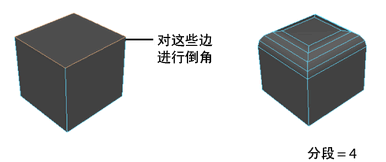
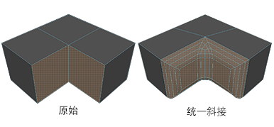
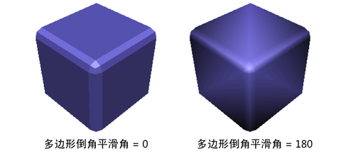

设置这些选项可控制在选择时发生的情况。
- 偏移类型(Offset Type)
-
选择计算倒角宽度的方式。
- 分形(Fractional)
-
选中“分形”(Fractional)时，倒角宽度将不会大于最短边。该选项会限制倒角的大小，以确保不会创建由内到外的倒角。这是默认设置。
- 绝对(Absolute)
-
选中“绝对”(Absolute)时，会使用“宽度”(Width)值，且在创建倒角时没有限制。如果使用的“宽度”(Width)值太大，倒角可能会变为由内到外。
- 偏移空间(Offset Space)
-
确定应用到已缩放对象的倒角是否也将按照对象上的缩放进行缩放。
注： “偏移空间”(Offset Space)选项仅当选中“绝对”(Absolute)时可用。
- 世界(World)
-
（默认）如果将某个已缩放对象倒角，那么偏移将忽略缩放并使用世界空间值。
- 局部(Local)
-
如果将某个已缩放对象倒角，那么也会按照应用到对象的缩放来缩放偏移。
- 宽度(Width)
-
指定原始边与偏移面的中心之间的距离来确定倒角的大小。“宽度”(Width)选项依赖于“偏移类型”(Offset Type)是设定为“分形”(Fractional)还是“绝对”(Absolute)。
如果“偏移类型”(Offset Type)为“分数”(Fractional)，则“宽度”(Width)值限制为介于 0 到 1 之间。“宽度”(Width)值为 1 时，该距离将成为可能的最大值（基于最短边），这样将不会产生由内到外的倒角。“宽度”(Width)值大于 1 将产生由内到外的倒角。
如果“偏移类型”(Offset Type)为“绝对”(Absolute)，则“宽度”(Width)值是原始边与偏移面之间的距离（该距离是使用场景的线性单位测量的）。这与倒角的半径类似。“宽度”(Width)值很大可能会产生由内到外的倒角。
值在 0.2 到 1.0 的范围内，尽管在禁用“世界空间”(World Space)的情况下，较小的值会产生更好的效果。
- 分段(Segments)
-
“分段”(Segments)值确定沿倒角多边形的边创建的分段数量。使用滑块或输入值可更改分段的数量。默认值为 1。
 - 深度(Depth)
-
调整向内 (-) 或向外 (+) 倒角边的距离。默认值为 1。
- 斜接(Mitering)
-
确定另外涉及一个或多个非倒角边时相交的倒角边如何接合到一起。
- 自动(Auto)
-
Maya 会自动为倒角的几何体指定最佳斜接类型。
- 如果两个倒角边之间的角度接近 360，则将斜接设置为“无”(None)。
- 如果只有两个倒角边，则将斜接设置为“一致”(Uniform)。
- 其他大多数情况下，将斜接设置为“径向”(Radial)。
- 一致(Uniform)
-
创建单个顶点，而不管相交处有多少边，均不属于倒角操作的一部分。如果倒角相交处至少有两个边未进行倒角，则 Maya 会创建一个角点。对相交处仅共享一个非倒角边的两个边进行倒角时，不会创建角点多边形。
 - 面片(Patch)
-
类似于“一致”(Uniform)，但会生成分辨率更高的角点，从而更平滑地进行过渡。
- 径向(Radial)
-
类似于“面片”(Patch)，但会在拐角处生成弧，而不是将倒角边顶点连接到非倒角边顶点。
- 无(None)
-
在每个非倒角边上创建新顶点。不执行斜接，使倒角边不互相直接连接（即：还会在每个相邻的倒角边之间创建一个顶点）。

- 斜接方向(Miter Along)
-
确定“斜接”(Mitering)设置为非“无”(None)时角顶点的移动方向。
- 自动(Auto)
-
Maya 会自动根据所倒角的几何体逐顶点指定最佳斜接方向。由于此方法逐顶点执行，因此获得的整体结果可能不同于任何其他可用选项。
- 中心(Center)
-
斜接顶点沿位于两个连接倒角边之间所成角度的中心的路径移动。
- 边(Edge)
-
斜接顶点沿任何连接边（无论是硬边还是软边）移动。如果有多个连接边，则将改用这些边的平均值。
- 硬边(Hard Edge)
-
斜接顶点仅沿硬边移动。如果连接了多个硬边，则将改用这些边的平均值。如果不存在硬边，结果等同于“中心”(Center)。
- 切角(Chamfer)
-
用于指定是否要对倒角边进行切角（倾斜）处理。默认设置为启用。
- 平滑角度(Smoothing angle)
-
使用该选项可以指定进行着色时希望倒角边是硬边还是软边。
如果希望倒角边是软边，请将“平滑角度”(Smoothing Angle)设置为较大的值 (180)。如果希望倒角边是硬边，请将“平滑角度”(Smoothing Angle)设置为较小的值 (0)。
通常，如果在两个共享边之间的角度大于“平滑角度”(Smoothing Angle)属性所指定的值，那么将对倒角边进行着色以显示为硬边。默认的“平滑角度”(Smoothing Angle)值是 30 度。
- 自动适配倒角到对象(Automatically fit bevel to object)
-
如果选择“自动适配倒角到对象”(Automatically fit bevel to object)，Maya 会自动确定倒角适配对象的方式。如果选中该选项，则无法更改“圆度”(Roundness)值。
- 圆度(Roundness)
-
默认情况下，Maya 会自动调整舍入来基于对象的几何体倒角对象。如果选择“自动适配倒角到对象”(Automatically fit bevel to object)，则会暗淡该选项。如果未选中“自动适配倒角到对象”(Automatically fit bevel to object)，请使用“圆度”(Roundness)滑块或输入值来圆化倒角边。可以将“圆度”(Roundness)设置为负数来创建向内的倒角。